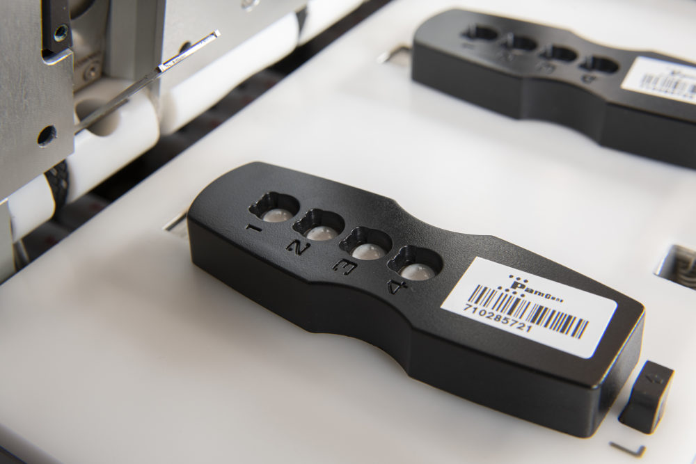

2 The PamStation® Platform
The PamGene PamStation 12 (PamStation® 12) Platform is a high-throughput peptide array platform that enables multiplexed kinase activity profiling (Breitkreutz et al. 2012; Mertins et al. 2014; McBrayer et al. 2012; Stebbing et al. 2014; Herling et al. 2016; Lee et al. 2009). The technology is based on the PamChip microarray chips, which contain hundreds of unique peptide sequences that are phosphorylated by kinases. The Pamstation® 12 can be used to profile the activity of serine/threonine (STK) kinases or protein tyrosine (PTK) kinases . The platform has two separate components: The Microarray Chip (PamChip® 4), and the Platform (Pamstation® 12) to process the samples. Figure 2.1 shows an overview of the platform.
2.1 PamChip® 4
The PamChip® is a microarray chip that is used for profiling the kinase activity. Each chip contains four wells, with each well being capable of processing a single sample. Figure 2.2 shows a typical PamChip® 4
The basic design of the chips is the same but they differ in the individual reporter peptides that are printed on the chip. The basic design of the chip can be seen in Figure 2.2. The chip is approximately as long as a credit card and has 4 wells. Each well can be used for one sample.
Figure 2.1 explains the logical construct of the chip. In each well of a chip, there is a grid of either 144 (for STK) or 196 (for PTK) peptides known to be substrates for kinases. Each spot has ∼ 300, 000 copies of the same peptide printed on it. The PamStation® 12 instrument accepts 3 chips of one kinds, either PTK or STK. The instrument then goes through several cycles of sample injection and washing. Once sufficient time has been given to the process, a flourescent antibody is added to the chip to allow for visualization. This allows for real-time capture of the activity based on the fluorescence levels. The STK chip requires two different antibodies to achieve fluorescence. The different mechanisms are summarized in Figure 2.3.
2.2 Kinase Coverage in PamChip® 4
The PamGene platform provides coverage for a substantial proportion of the human kinome, enabling a comprehensive analysis of kinase activity. Specifically, the STK and PTK chips have been designed to cover a large number of Ser/Thr and Tyr kinases, respectively. It has been reported that the STK and PTK chips can map approximately 65% and 96% of the known human Ser/Thr and Tyr kinases, respectively (Manning et al. 2002). Furthermore, the platform is able to detect about 18 out of 21 (86%) of the dual specificity kinases (Manning et al. 2002). This broad coverage enables researchers to simultaneously screen the activity of multiple kinases, providing a more complete understanding of the biological system being studied.
Additionally, the STK chip has been shown to have sensitivity for detection into the picogram range for many kinases (Manning et al. 2002). The coverage of kinases in the STK chip is also representative of the abundance of protein kinases in neurons. A study based on the Brainseq neuron database (https://www.brainrnaseq.org/) showed that the STK chip covers similar amounts of low (52%), medium (65%), and high (65%) abundance protein kinases in neurons (Sousa et al. 2017).
Taken together, these findings demonstrate that the PamGene platform provides a comprehensive and sensitive tool for studying kinase activity in a wide range of biological systems.

2.3 PamStation® 12
The Pamstation® 12 system consists of a robotic liquid handling system, a hybridization chamber, and a laser scanner. The robotic liquid handling system is used to apply samples, buffers, and fluorescent antibodies to the PamChips. The hybridization chamber is designed to hold up to three PamChips and provide the necessary conditions for kinase reactions to occur. The laser scanner is used to detect the fluorescent signals from the PamChips.
2.4 Key Advantages
The Pamstation® 12 has several key advantages over other kinase activity profiling methods. First, the platform allows for unbiased detection of kinase activity, as it does not rely on prior knowledge of kinase-substrate interactions. Second, the real-time detection of kinase activity allows for the precise measurement of kinetic parameters, such as reaction rates and enzyme efficiency. Third, the platform is highly sensitive and can detect changes in kinase activity even in complex biological samples, such as cell lysates and tissue homogenates.
The Pamstation® 12 has been widely used in a variety of research fields, including cancer biology, neuroscience, and plant biology. For example, the platform has been used to study the activity of kinases in breast cancer cells and to identify potential therapeutic targets for cancer treatment. Additionally, the Pamstation® 12 has been used to profile the kinome of Arabidopsis thaliana, a model plant organism, and to gain insights into the regulation of plant development and stress responses.
In summary, the PamGene PamStation twelve is a powerful tool for the high-throughput profiling of kinase activity. The platform offers several advantages over other methods, including unbiased detection of kinase activity, real-time measurement of kinetic parameters, and high sensitivity for complex biological samples. The Pamstation® 12 is a registered trademark of PamGene International B.V. and has been widely used in diverse research fields to gain insights into the molecular mechanisms underlying complex biological processes.